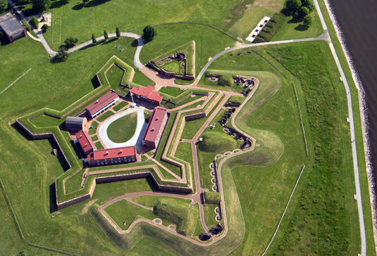

|
Descriptive geometry is the branch of geometry which allows the representation
of three-dimensional objects in two dimensions, by using a specific set of procedures.
The resulting techniques are important for engineering, architecture, design and in art.
The theoretical basis for descriptive geometry is provided by the orthogonal projections.

Illustration: orthogonal projections of a car model.
Gaspard Monge is usually considered the "father of descriptive geometry". He first developed his techniques to solve geometric problems in 1765 while working as a draftsman for military fortifications
The French mathematician Gaspard Monge (1746-1818) is considered the founder of descriptive geometry.
He used it in military engineering (construction of fortifications) during the time of Napoleon Bonaparte.
In fact, descriptive geometry was considered a military secret.
Dennis Lieu and Sheryl Sorby, in their excellent book Visualization, Modeling, and Graphics for Engineering Design,
present the historical context:
|
“Gunpowder was introduced during the Renaissance, as was the cannon. The cannon
made obsolete most of the fortresses built during the medieval era. The walls could
not withstand impact from cannon projectiles. Consequently, fortresses needed to be
redesigned to survive cannon fire. In France, a new, stronger style of fortification was
designed. The fortification was constructed with angled walls that helped to deflect
cannon fire and did not crumble as flat vertical walls did when struck head on. The new
fortresses were geometrically more complicated to build than their predecessors with
vertical walls. Further, the perimeter of the fortress had evolved from a simple rectangular
shape to a pentagonal shape with a prominent extension at each apex. That
perimeter shape, coupled with the angled walls, resulted in walls that intersected at odd
angles that could not be seen and measured easily or directly.
[...]
Fortunately, the French had Gaspard Monge, who developed a graphical analysis
technique called descriptive geometry.
[...]
Descriptive geometry techniques enabled engineers to
create any view of a geometric object from two existing views. By creating the proper
view, engineers could see and measure an object’s attributes, such as the true length of
its lines, the true shape of planes, and true angles of intersection.
[...]
The
complex geometry, odd angles of intersection, and height of walls were intended to
maximize the cross fire on an approaching enemy, while not revealing the interior of
the fortress.
[...]
The astuteness of the French at building fortifications kept France the prime military
power in Europe until the 1700s. At that time, descriptive geometry was considered
a French state secret; divulging it was a crime punishable by death. As a result of
the alliance between France and the newly constituted United States, many U.S. fortifications
used French designs. An example is Fort McHenry (shown in Figure 1.13),
which was built in 1806 and is exquisitely preserved in Baltimore, Maryland.
Fort McHenry survived bombardment by the British during the War of 1812 and is significant
because it inspired Francis Scott Key to write The Star Spangled Banner,
the national anthem of the United States of America.”
Note: the Chapter 1 of the book Visualization, Modeling, and Graphics for Engineering Design by
Lieu and Sorby is freely available
here.

Photo: Fort McHenry (IAN Image and Video Library).
|
|